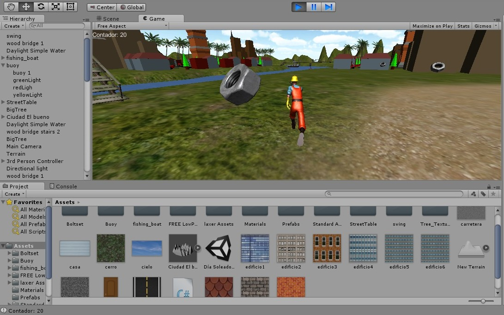

Unity
Descripción: El trabajo final consistió en crear un minijuego donde el jugador recorriera una ciudad recogiendo diversos objetos, en este caso, fueron tuercas, ya que el personaje era un mecánico.
Características:
- La ciudad tenía al menos 3 edificios creados en Blender y cada uno tenía colliders
- La ciudad tenía al menos 3 elementos del asset store
- La ciudad tenía cielo/océano/islas/playa
- La ciudad tenía bosques/montañas
- El jugador no se caía al llegar a un extremo de la ciudad
- Los items desaparecían cuando los tocaba el jugador
- Los items tenían alguna animación
- La UI mostraba la cantidad total de items por recoger
- La cantidad de items disminuía cada que el jugador tocaba alguno
- La UI mostraba un mensaje cuando la cantidad de items era cero
Imágenes:

Opinión personal: Me gustó hacer este minijuego. Me pareció muy bueno tener la oportunidad de agregar objetos ya creados en el proyecto desde la Asset Store de Unity, eso simplificó mucho el trabajo, además de que se agregó la ciudad que ya habíamos creado en Blender.